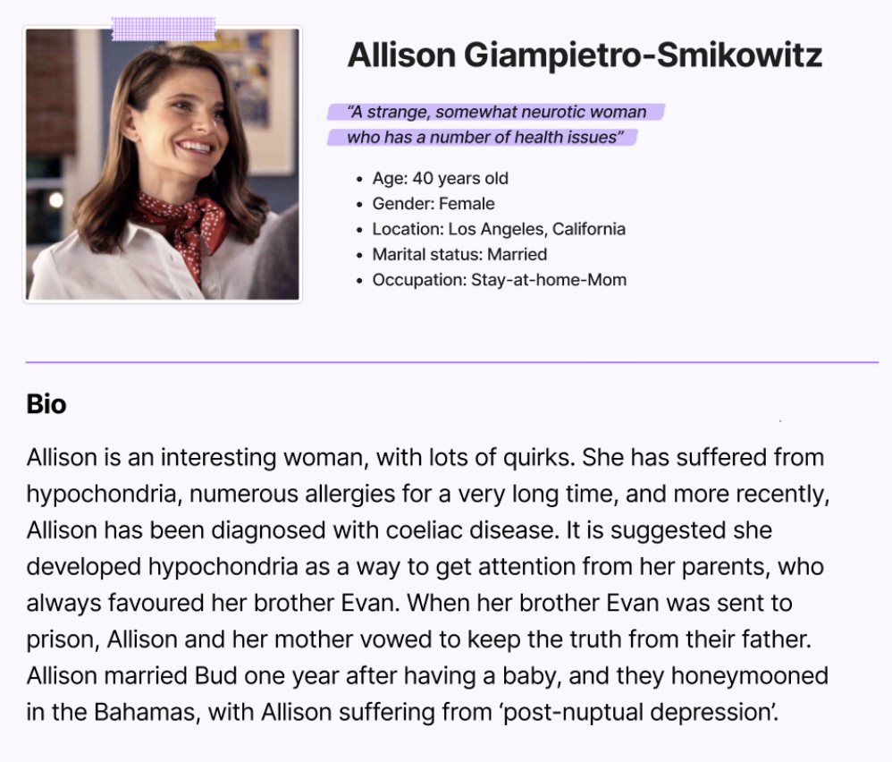
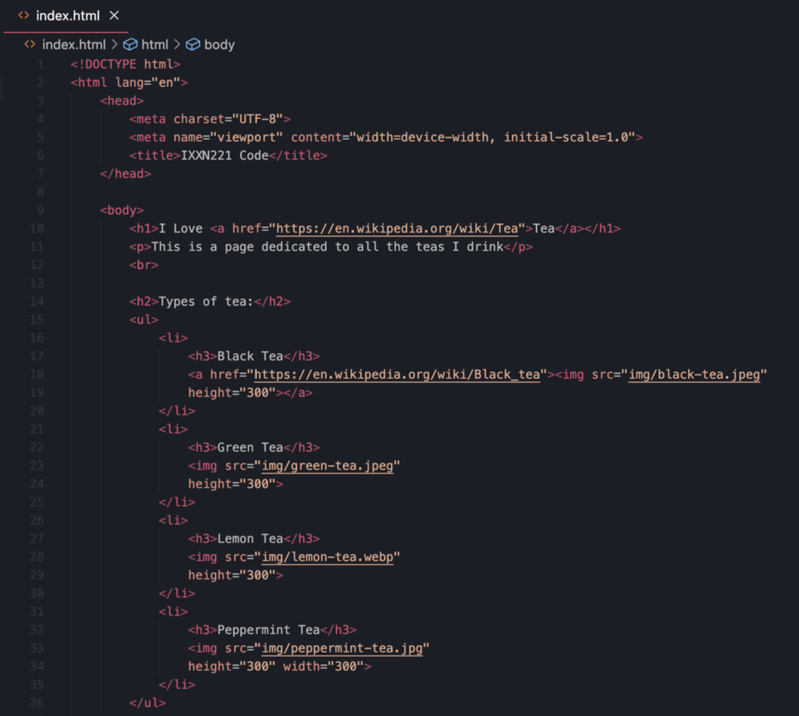

In this lecture, I learned that the new space in Figma called Dev Mode helps to translate designs into code. This feature will be super helpful for the upcoming assignment.
As part of the workshop exersice, I made my own name tag in the class Figma page as seen below.
In today's lecture, I learned that the term ‘User Experience’ first appeared in a presentation by a team of Apple employees in 1995. I found this interesting because Apple have user-friendly products, so this tells us that they create value for their customers based on user experience. User experience is relevant and should be applied to web design because it fulfils the user’s needs and aims to provide a positive experience - based on Apple’s success, this should be an important factor to consider for the upcoming projects in this course.
My persona from the class workshop is as follows.
I found the Cards for Humanity tool very handy for creating the fictional persona. Following the coding lecture, I made my own website on Visual Studio Code: I’ve done some coding in other courses before so I’m fairly familiar with it, but I definitely needed the basics to refresh my memory.

In today’s lecture, I learned the differences between Web 1.0 and Web 2.0.
- Web 1.0 sites didn't have sophisticated user tracking or personalisation mechanisms, so everyone saw the same content regardless of their preference or behaviour. There was limited interactivity and user engagement feedback/ability to contribute.
- Web 2.0 (the second generation of our web) brought significant changes to the internet landscape. Core principles still remain consistent - user-generated content, interactivity and engagement, personalisation and recommendations, and collaborativeness. The platforms used data to offer personalised content (individual preferences, behaviour and demographics).
I also learned about Raster and Vector files:
- Raster is a file built from pixels (heaps of tiny squares) - the more pixels, the higher the quality will be (photoshop files are rasterized).
- Vector is a file in a mathematical formula - making shapes in Figma is an SCG file (can be scaled up/down), and Illustrator files are vector (.ai).
My user/designer Venn diagram:
Following the coding lecture, I added a link to a text and a picture, and I created an ordered and unordered list as seen below:
Week 3 Quiz (1%): 100%
In 2022, Adobe announced the acquisition of Figma. This is relevant to web design as Figma has been one of the better platforms to use among the web design community and with Adobe acquiring it, the functionality and the free access could change in the near future being in their hands now.
- The customer journey map should include stages of the journey; activities; and feelings & experiences.
- User flow is a very specific and detailed visualization of the set of actions the user is actively taking - the flows are not fixed - good for visualizing what the interface looks like at a glance.
In today’s coding class, we worked on creating box models (padding, border, margin). I enjoyed learning how to make the image move in instead of all of the margins moving.
Week 4 Quiz (1%): 80%
In today’s coding lecture, we covered div’s and flex boxes. I learned that there are two types of div's:
- ID (an element which you DON'T repeat in your code) - you use a hashtag in the CSS file when linking it to a div.
- Class (an element which you WOULD repeat in your code) - you use a dot in the CSS file when linking it to a div.
Week 5 Quiz (1%): 80%
Today’s lecture was helpful as I wasn’t aware of some of the recommended links to help with web design such as:
I found the ‘60-30-10’ rule (to help segment colours into primary, secondary and accent colours) super helpful and will use it to distribute colours throughout the website I design for the next assignment.
Another useful tip I learned in this class was that in terms of the width of each line in a typical body paragraph, keeping within 50-75 characters across each line makes it comfortable for viewers to read.
Workshop (1%) on evaluating and critiquing a web design based on a brief (I completed mine on Figma):
The pre-recorded lecture was easy to follow and helped me understand the basics of GitHub.
From what I understood, once a new branch is made from the ‘main’, the ‘main’ will stay there/won’t progress until the commit is merged/the ‘main’ is up to date by merging the new branch content with it. After doing so, you could continue working on ‘main’, or you could continue using the development branch, and then repeat this process to merge commit.
This week's lecture helped me understand affordances - I learned that affordances are little actions that indicate to you what you should do in that scenario for example, a prompt of what can be done with a particular object or queues that will hint to the users how they may interact with something on a website (like a CTA button or interactive icons).
I learned about hidden affordances, like when a user hovers over a button and it reveals more information (or for example, the 3 lines typically at the top of a website to indicate a menu navigation bar).
I found it useful going through the submission and a student example for assignment 2.1 as it helped me gauge the standard I should be working towards.
In today’s lecture we discussed Assignment 2.2 and it helped me decide to do the CMS option, using either EditorX or Webflow - both websites have tutorials (Academy X and Webflow University) which will be super helpful.
In today’s coding class, we looked at responsive grids whereby we made a responsive website which can be used on multiple devices (mobile, tablet, and desktop).
Something I learned from the class was that it’s most efficient to start coding for a mobile device, and then slowly work your way up to tablet device then a desktop device as it saves a lot of time from coding (compared to if you were to start with a desktop device, then a tablet, then a mobile.
Mobile, Tablet, then Desktop device:
A responsive design is an approach that aims to build websites that work seamlessly on all devices - in doing so, the standard display screens should be accounted for (and interactive in terms of touch screens and keyboards). The standard display screens are shown below:
As recommended in the lecture, I will try to accommodate at least these 5 display screens for assignment 2.2:
In terms of file organisation, Haowei discussed the importance of organising files to help with productivity and reduce frustration in the long run when e.g. making updates or collaborating. Haowei also expanded on Alt text which is a critical component for website accessibility, especially in terms of providing an inclusive user experience.
Something I learned in today’s lecture was you can see how a website is structured by selecting (View > Developer > Inspect elements). You can also see a preview of what it looks like on different types of display screens. This is useful in web design and specifically for assignment 2.2 as knowing the structure of a website helps in designing it to be responsive. Further, understanding the layout and structure is crucial for making sure it looks and functions well on all devices. Ultimately, it should work towards designing a well-designed, user-friendly, and effective website.
Week 9 Quiz (1%): TBC%
Today’s class was helpful when going over assignment 2.2 and the weekly blog. I’m planning to narrow my weekly blog down to about 150 words per weekly submission as recommended in the lecture. In terms of the weekly blog assignment, it helped seeing Shiv and Jamie’s coded blogs from when they did this class.
Click here to see the website I designed for Assignment 2.2 using Webflow.
In our final lecture, Haowei went through the content we covered each week’s which was very useful. It made me appreciate having recorded my blog each week, as it saved me having to go back and reflect on each week.
Haowei recommended using Behance as inspiration for a website layout, so I will refer to this when working on Assignment 3.
I’ve really enjoyed this course and it’s really helped me appreciate how much time goes into designing websites!